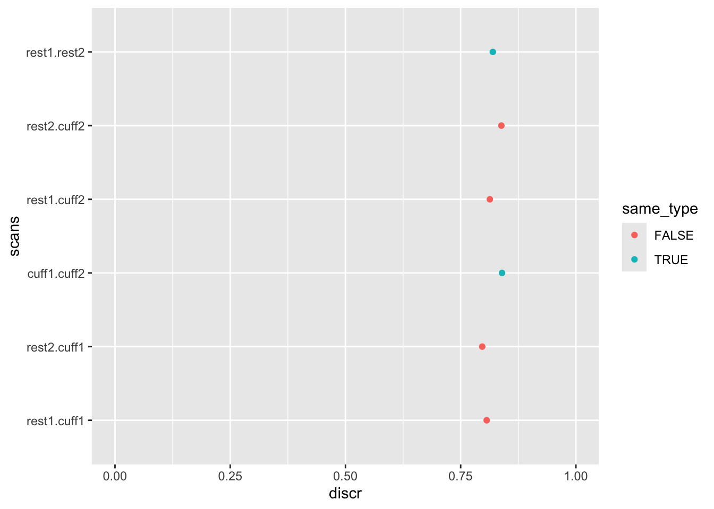

library(arrow)
library(dplyr)
library(tidyr)
library(purrr)
library(stringr)
library(readr)
library(fs)
library(mgc)
library(ggplot2)7 Functional Connectivity
Functional connectivity is a measurement of how activity in different regions of the brain are related. It is calculated by reducing the voxelwise timeseries into a set of parceled timecourses and then calculating a measure of connectivity between those timecourses.
This kit reviews the A2CPS functional connectivity derivatives that have been created by pre-defined parcellations. For functional connectivity derived from independent components, see the GIFT starter kit (forthcoming).
7.1 Starting Project
7.1.1 Locate data
On TACC, the neuroimaging data are stored underneath the releases. For example, data release v2.#.# is underneath
pre-surgery/mrisThe functional connectivity derivatives are underneath mris/derivatives/fcn
$ ls mris/derivatives/fcn/
cleaned confounds confounds.json connectivity connectivity.json timeseries timeseries.jsonThe functional connectivity data is in a tabular format in the folder connectivity. The A2CPS dataset includes functional connectivity from several atlases, estimated using multiple methods. For details on the atlases, see the data dictionary connectivity.json.
To enable flexibility, the timeseries parcellations are also provided in the folder timeseries, with data dictionary timeseries.json. These enable analyses such as dynamic connectivity or calculation of alternative measures of connectivity (e.g., partial correlation).
The tabular data comprise parquet files that have been partitioned in a hive style. That is, subfolder names contain column information (e.g., participant label).
$ tree connectivity | head -n 20
connectivity
├── sub=10003
│ └── ses=V1
│ ├── task=cuff
│ │ └── run=1
│ │ ├── atlas=difumo_dimension-1024_resolution-2mm
│ │ │ ├── estimator=empirical
│ │ │ │ └── part-0.parquet
│ │ │ └── estimator=leodit_wolf
│ │ │ └── part-0.parquet
│ │ ├── atlas=difumo_dimension-64_resolution-2mm
│ │ │ ├── estimator=empirical
│ │ │ │ └── part-0.parquet
│ │ │ └── estimator=leodit_wolf
│ │ │ └── part-0.parquet
│ │ ├── atlas=dmn
│ │ │ ├── estimator=empirical
│ │ │ │ └── part-0.parquet
│ │ │ └── estimator=leodit_wolf
│ │ │ └── part-0.parquetThe timeseries were extracted from the NIfTI files in cleaned, which are the outputs of fMRIPrep after band-pass filtering (0.01 - 0.1Hz), quadratic detrending, and nuisance regression (Sadil et al. (2024)). The nuisance regressors are stored in the folder confounds.
Sadil, P., Arfanakis, K., Bhuiyan, E. H., Caffo, B., Calhoun, V. D., Clauw, D. J., DeLano, M. C., Ford, J. C., Gattu, R., Guo, X., Harris, R. E., Ichesco, E., Johnson, M. A., Jung, H., Kahn, A. B., Kaplan, C. M., Leloudas, N., Lindquist, M. A., Luo, Q., … Chronic Pain Signatures Consortium, T. A. to. (2024). Image processing in the acute to chronic pain signatures (A2CPS) project. bioRxiv. https://doi.org/10.1101/2024.12.19.627509
7.1.2 Extract data
Most users will start with the functional connectivity data. For example, here we grab the connectivity associated with the Default Mode Network (DMN) atlas (the nodal coordinates were derived from Baliki et al. (2012)). In this case, we’ll restrict results to connectivities generated with the empirical estimator.
Baliki, M. N., Petre, B., Torbey, S., Herrmann, K. M., Huang, L., Schnitzer, T. J., Fields, H. L., & Apkarian, A. V. (2012). Corticostriatal functional connectivity predicts transition to chronic back pain. Nature Neuroscience, 15(8), 1117–1119. https://doi.org/10.1038/nn.3153
dmn <- open_dataset("data/connectivity") |>
filter(atlas == "dmn") |>
filter(estimator == "empirical") |>
select(sub, source, target, connectivity) |>
collect()
head(dmn)| sub | source | target | connectivity |
|---|
Notice that the source and target fields are simply integer indices for this atlas. As specified in connectivity.json, information about these regions is available in one of the A2CPS GitHub repos. That table can be read directly from a URL.
dmn_labels <- read_csv("https://raw.githubusercontent.com/a2cps/functional_connectivity/3aa91a6c10d14dcc7d1fe9890e7a6db95d2aad8b/src/functional_connectivity/data/baliki.csv")
dmn_labels| region | label | x | y | z |
|---|---|---|---|---|
| 1 | mPFC | 2 | 52 | -2 |
| 2 | rNAC | 10 | 12 | -8 |
| 3 | rInsula | 40 | -6 | -2 |
| 4 | S1/M1 | -32 | -34 | 66 |
After reading in the labels, they can be merged with the functional connectivity results.
dmn_labeled <- dmn |>
left_join(dmn_labels, by = join_by(source == region)) |>
select(-source, -x, -y, -z) |>
rename(source = label) |>
left_join(dmn_labels, by = join_by(target == region)) |>
select(-target, -x, -y, -z) |>
rename(target = label)
head(dmn_labeled)| sub | connectivity | source | target |
|---|
7.2 Considerations While Working on the Project
7.2.1 Variability Across Scanners
Many MRI biomarkers exhibit variability across the scanners, which may confound some analyses. For an up-to-date assessment of the issue and overview of current thinking, please see Confluence.
7.2.2 Data Quality
As with any MRI derivative, all pipeline derivatives have been included. This means that products were included regardless of their quality, and so some products may have been generated from images that are known to have poor quality—rated “red”, or incomparable. For details on the ratings and how to exclude them, see Appendix A. Additionally, extensive QC has not yet been performed on the derivatives themselves, and so there may be cases where pipelines produced atypical outputs. For an overview of planned checks, see Confluence.
7.2.3 Example Analysis: Discriminability
In this section, we show how the connectivity results could be used to calculate discriminability (Bridgeford et al., 2021), which is a multivariate measure of replicability like the intra-class correlation coefficient or fingerprinting. Discriminability ranges from 0 - 1, with 0.5 indicating something like an equal chance that the two scans from the same participants are as similar as the two scans from different participants, and 1 indicating that the two scans from the same participant are always more similar than two scans from differing participants.
Bridgeford, E. W., Wang, S., Wang, Z., Xu, T., Craddock, C., Dey, J., Kiar, G., Gray-Roncal, W., Colantuoni, C., Douville, C., et al. (2021). Eliminating accidental deviations to minimize generalization error and maximize replicability: Applications in connectomics and genomics. PLoS Computational Biology, 17(9), e1009279. https://doi.org/10.1371/journal.pcbi.1009279
We are going to assess whether a person’s connectivity matrix is consistent across runs, even across runs of different types (e.g., CUFF1 vs CUFF2, REST1 vs CUFF1).
First, we need a list of participants that have all four scan types.
subs_with_all_runs <- open_dataset("data/connectivity") |>
distinct(sub, task, run) |>
count(sub) |>
filter(n == 4) |>
select(sub) |>
collect()As usual, we should also restrict analyses to only those runs that are not “red”.
red_fmri <- read_tsv(dir_ls("data/scans", glob = "*tsv"), na = "n/a") |>
filter(str_detect(filename, "task")) |>
filter(rating == "red") |>
mutate(
sub = str_extract(filename, "(?<=sub-)[[:digit:]]{5}") |>
as.integer()
) |>
distinct(sub)
head(red_fmri)| sub |
|---|
| 10049 |
| 10058 |
| 10060 |
| 10074 |
| 10086 |
| 10092 |
Of the list of participants with all four functional scans, filter out the participants for which any of the scans were red.
subs_with_all_runs_ok <- subs_with_all_runs |>
anti_join(red_fmri)Use this to filter the connectivity results. We’ll select just one of the smaller DiFuMo atlases (Dadi et al., 2020). As before, we’ll stick with the empirical estimator.
Dadi, K., Varoquaux, G., Machlouzarides-Shalit, A., Gorgolewski, K. J., Wassermann, D., Thirion, B., & Mensch, A. (2020). Fine-grain atlases of functional modes for fMRI analysis. NeuroImage, 221, 117126. https://doi.org/10.1016/j.neuroimage.2020.117126
fcn <- open_dataset("data/connectivity") |>
filter(atlas == "difumo_dimension-64_resolution-2mm") |>
filter(estimator == "empirical") |>
semi_join(subs_with_all_runs_ok, by = join_by(sub)) |>
mutate(scan = str_c(task, run)) |>
select(-atlas, -ses, -task, -run, -estimator) |>
collect()
head(fcn)| source | target | connectivity | sub | scan |
|---|---|---|---|---|
| 1 | 10 | 0.0352251 | 10010 | rest1 |
| 1 | 11 | 0.3364920 | 10010 | rest1 |
| 1 | 12 | 0.3715636 | 10010 | rest1 |
| 1 | 13 | -0.0007062 | 10010 | rest1 |
| 1 | 14 | 0.2097767 | 10010 | rest1 |
| 1 | 15 | 0.3638389 | 10010 | rest1 |
Next, define some helper functions to break up the different parts of the analysis pipeline.
get_scan_combinations <- function(
scans = c("rest1", "rest2", "cuff1", "cuff2"),
.col1 = scan1,
.col2 = scan2) {
combn(scans, 2) |>
t() |>
as_tibble() |>
rename({{ .col1 }} := V1, {{ .col2 }} := V2)
}
join_fcn_to_combinations <- function(.data, fcn) {
fcn_nested <- group_nest(fcn, scan)
.data |>
left_join(fcn_nested, by = join_by(scan1 == scan)) |>
left_join(fcn_nested, by = join_by(scan2 == scan)) |>
mutate(
data = map2(
data.x, data.y,
~ left_join(.x, .y, by = join_by(source, target, sub))
)
) |>
select(-starts_with("data."))
}
get_discr <- function(.data) {
d <- .data |>
mutate(feature = interaction(source, target)) |>
select(-source, -target) |>
pivot_longer(starts_with("connectivity")) |>
pivot_wider(names_from = "feature")
discr.stat(
as.matrix(select(d, -sub, -name)),
as.matrix(select(d, sub))
)$discr
}Apply these helper functions to the functional connectivity data, calculating discriminability.
discriminability <- get_scan_combinations() |>
join_fcn_to_combinations(fcn) |>
mutate(discr = map_dbl(data, get_discr)) |>
select(-data)To review the results, plot the data. When plotting, let’s color the points based on whether the two scans are of the same type.
discriminability |>
mutate(
same_type = (str_detect(scan1, "rest") & str_detect(scan2, "rest")) |
(str_detect(scan1, "cuff") & str_detect(scan2, "cuff")),
scans = interaction(scan1, scan2)
) |>
ggplot(aes(x = scans, y = discr, color = same_type)) +
geom_point() +
coord_flip() +
ylim(0, 1)
Overall, discriminability is around 0.8, with at most minor differences between different pairings of runs.